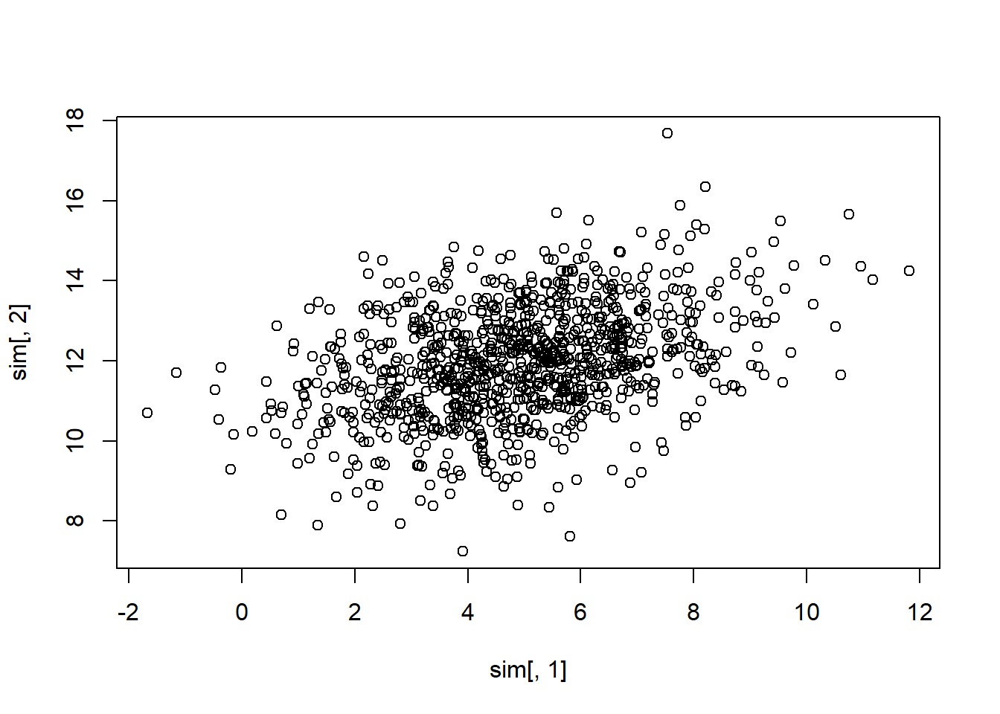
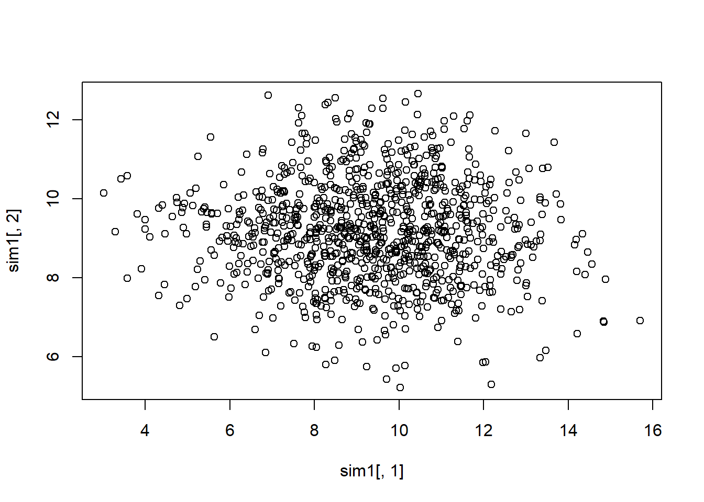

22.2 Principal Components
- Unsupervised learning
- find important features
- reduce the dimensions of the data set
- “decorrelate” multivariate vectors that have dependence.
- uses eigenvector/eigvenvalue decomposition of covariance (correlation) matrices.
According to the “spectral decomposition theorem”, if \(\mathbf{\Sigma}_{p \times p}\) i s a positive semi-definite, symmetric, real matrix, then there exists an orthogonal matrix \(\mathbf{A}\) such that \(\mathbf{A'\Sigma A} = \Lambda\) where \(\Lambda\) is a diagonal matrix containing the eigenvalues \(\mathbf{\Sigma}\)
\[ \mathbf{\Lambda} = \left( \begin{array} {cccc} \lambda_1 & 0 & \ldots & 0 \\ 0 & \lambda_2 & \ldots & 0 \\ \vdots & \vdots & \ddots & \vdots \\ 0 & 0 & \ldots & \lambda_p \end{array} \right) \]
\[ \mathbf{A} = \left( \begin{array} {cccc} \mathbf{a}_1 & \mathbf{a}_2 & \ldots & \mathbf{a}_p \end{array} \right) \]
the i-th column of \(\mathbf{A}\) , \(\mathbf{a}_i\), is the i-th \(p \times 1\) eigenvector of \(\mathbf{\Sigma}\) that corresponds to the eigenvalue, \(\lambda_i\) , where \(\lambda_1 \ge \lambda_2 \ge \ldots \ge \lambda_p\) . Alternatively, express in matrix decomposition:
\[ \mathbf{\Sigma} = \mathbf{A \Lambda A}' \]
\[ \mathbf{\Sigma} = \mathbf{A} \left( \begin{array} {cccc} \lambda_1 & 0 & \ldots & 0 \\ 0 & \lambda_2 & \ldots & 0 \\ \vdots & \vdots& \ddots & \vdots \\ 0 & 0 & \ldots & \lambda_p \end{array} \right) \mathbf{A}' = \sum_{i=1}^p \lambda_i \mathbf{a}_i \mathbf{a}_i' \]
where the outer product \(\mathbf{a}_i \mathbf{a}_i'\) is a \(p \times p\) matrix of rank 1.
For example,
\(\mathbf{x} \sim N_2(\mathbf{\mu}, \mathbf{\Sigma})\)
\[ \mathbf{\mu} = \left( \begin{array} {c} 5 \\ 12 \end{array} \right); \mathbf{\Sigma} = \left( \begin{array} {cc} 4 & 1 \\ 1 & 2 \end{array} \right) \]
library(MASS)
mu = as.matrix(c(5,12))
Sigma = matrix(c(4,1,1,2),nrow = 2, byrow = T)
sim <- mvrnorm(n = 1000, mu = mu, Sigma = Sigma)
plot(sim[,1],sim[,2])
Here,
\[ \mathbf{A} = \left( \begin{array} {cc} 0.9239 & -0.3827 \\ 0.3827 & 0.9239 \\ \end{array} \right) \]
Columns of \(\mathbf{A}\) are the eigenvectors for the decomposition
Under matrix multiplication (\(\mathbf{A'\Sigma A}\) or \(\mathbf{A'A}\) ), the off-diagonal elements equal to 0
Multiplying data by this matrix (i.e., projecting the data onto the orthogonal axes); the distriubiton of the resulting data (i.e., “scores”) is
\[ N_2 (\mathbf{A'\mu,A'\Sigma A}) = N_2 (\mathbf{A'\mu, \Lambda}) \]
Equivalently,
\[ \mathbf{y} = \mathbf{A'x} \sim N \left[ \left( \begin{array} {c} 9.2119 \\ 9.1733 \end{array} \right), \left( \begin{array} {cc} 4.4144 & 0 \\ 0 & 1.5859 \end{array} \right) \right] \]
A_matrix = matrix(c(0.9239,-0.3827,0.3827,0.9239),nrow = 2, byrow = T)
t(A_matrix) %*% A_matrix
#> [,1] [,2]
#> [1,] 1.000051 0.000000
#> [2,] 0.000000 1.000051
sim1 <- mvrnorm(n = 1000, mu = t(A_matrix) %*% mu, Sigma = t(A_matrix) %*% Sigma %*% A_matrix)
plot(sim1[,1],sim1[,2])
No more dependence in the data structure, plot
Notes:
The i-th eigenvalue is the variance of a linear combination of the elements of \(\mathbf{x}\) ; \(var(y_i) = var(\mathbf{a'_i x}) = \lambda_i\)
The values on the transformed set of axes (i.e., the \(y_i\)’s) are called the scores. These are the orthogonal projections of the data onto the “new principal component axes
Variances of \(y_1\) are greater than those for any other possible projection
Covariance matrix decomposition and projection onto orthogonal axes = PCA
22.2.1 Population Principal Components
\(p \times 1\) vectors \(\mathbf{x}_1, \dots , \mathbf{x}_n\) which are iid with \(var(\mathbf{x}_i) = \mathbf{\Sigma}\)
The first PC is the linear combination \(y_1 = \mathbf{a}_1' \mathbf{x} = a_{11}x_1 + \dots + a_{1p}x_p\) with \(\mathbf{a}_1' \mathbf{a}_1 = 1\) such that \(var(y_1)\) is the maximum of all linear combinations of \(\mathbf{x}\) which have unit length
The second PC is the linear combination \(y_1 = \mathbf{a}_2' \mathbf{x} = a_{21}x_1 + \dots + a_{2p}x_p\) with \(\mathbf{a}_2' \mathbf{a}_2 = 1\) such that \(var(y_1)\) is the maximum of all linear combinations of \(\mathbf{x}\) which have unit length and uncorrelated with \(y_1\) (i.e., \(cov(\mathbf{a}_1' \mathbf{x}, \mathbf{a}'_2 \mathbf{x}) =0\)
continues for all \(y_i\) to \(y_p\)
\(\mathbf{a}_i\)’s are those that make up the matrix \(\mathbf{A}\) in the symmetric decomposition \(\mathbf{A'\Sigma A} = \mathbf{\Lambda}\) , where \(var(y_1) = \lambda_1, \dots , var(y_p) = \lambda_p\) And the total variance of \(\mathbf{x}\) is
\[ \begin{aligned} var(x_1) + \dots + var(x_p) &= tr(\Sigma) = \lambda_1 + \dots + \lambda_p \\ &= var(y_1) + \dots + var(y_p) \end{aligned} \]
Data Reduction
To reduce the dimension of data from p (original) to k dimensions without much “loss of information”, we can use properties of the population principal components
Suppose \(\mathbf{\Sigma} \approx \sum_{i=1}^k \lambda_i \mathbf{a}_i \mathbf{a}_i'\) . Even thought the true variance-covariance matrix has rank \(p\) , it can be be well approximate by a matrix of rank k (k <p)
New “traits” are linear combinations of the measured traits. We can attempt to make meaningful interpretation fo the combinations (with orthogonality constraints).
The proportion of the total variance accounted for by the j-th principal component is
\[ \frac{var(y_j)}{\sum_{i=1}^p var(y_i)} = \frac{\lambda_j}{\sum_{i=1}^p \lambda_i} \]
The proportion of the total variation accounted for by the first k principal components is \(\frac{\sum_{i=1}^k \lambda_i}{\sum_{i=1}^p \lambda_i}\)
Above example , we have \(4.4144/(4+2) = .735\) of the total variability can be explained by the first principal component
22.2.2 Sample Principal Components
Since \(\mathbf{\Sigma}\) is unknown, we use
\[ \mathbf{S} = \frac{1}{n-1}\sum_{i=1}^n (\mathbf{x}_i - \bar{\mathbf{x}})(\mathbf{x}_i - \bar{\mathbf{x}})' \]
Let \(\hat{\lambda}_1 \ge \hat{\lambda}_2 \ge \dots \ge \hat{\lambda}_p \ge 0\) be the eigenvalues of \(\mathbf{S}\) and \(\hat{\mathbf{a}}_1, \hat{\mathbf{a}}_2, \dots, \hat{\mathbf{a}}_p\) denote the eigenvectors of \(\mathbf{S}\)
Then, the i-th sample principal component score (or principal component or score) is
\[ \hat{y}_{ij} = \sum_{k=1}^p \hat{a}_{ik}x_{kj} = \hat{\mathbf{a}}_i'\mathbf{x}_j \]
Properties of Sample Principal Components
The estimated variance of \(y_i = \hat{\mathbf{a}}_i'\mathbf{x}_j\) is \(\hat{\lambda}_i\)
The sample covariance between \(\hat{y}_i\) and \(\hat{y}_{i'}\) is 0 when \(i \neq i'\)
The proportion of the total sample variance accounted for by the i-th sample principal component is \(\frac{\hat{\lambda}_i}{\sum_{k=1}^p \hat{\lambda}_k}\)
The estimated correlation between the i-th principal component score and the l-th attribute of \(\mathbf{x}\) is
\[ r_{x_l , \hat{y}_i} = \frac{\hat{a}_{il}\sqrt{\lambda_i}}{\sqrt{s_{ll}}} \]
The correlation coefficient is typically used to interpret the components (i.e., if this correlation is high then it suggests that the l-th original trait is important in the i-th principle component). According to \[@Johnson_1988, pp.433-434\], \(r_{x_l, \hat{y}_i}\) only measures the univariate contribution of an individual X to a component Y without taking into account the presence of the other X’s. Hence, some prefer \(\hat{a}_{il}\) coefficient to interpret the principal component.
\(r_{x_l, \hat{y}_i} ; \hat{a}_{il}\) are referred to as “loadings”
To use k principal components, we must calculate the scores for each data vector in the sample
\[ \mathbf{y}_j = \left( \begin{array} {c} y_{1j} \\ y_{2j} \\ \vdots \\ y_{kj} \end{array} \right) = \left( \begin{array} {c} \hat{\mathbf{a}}_1' \mathbf{x}_j \\ \hat{\mathbf{a}}_2' \mathbf{x}_j \\ \vdots \\ \hat{\mathbf{a}}_k' \mathbf{x}_j \end{array} \right) = \left( \begin{array} {c} \hat{\mathbf{a}}_1' \\ \hat{\mathbf{a}}_2' \\ \vdots \\ \hat{\mathbf{a}}_k' \end{array} \right) \mathbf{x}_j \]
Issues:
Large sample theory exists for eigenvalues and eigenvectors of sample covariance matrices if inference is necessary. But we do not do inference with PCA, we only use it as exploratory or descriptive analysis.
PC is not invariant to changes in scale (Exception: if all trait are resecaled by multiplying by the same constant, such as feet to inches).
PCA based on the correlation matrix \(\mathbf{R}\) is different than that based on the covariance matrix \(\mathbf{\Sigma}\)
PCA for the correlation matrix is just rescaling each trait to have unit variance
Transform \(\mathbf{x}\) to \(\mathbf{z}\) where \(z_{ij} = (x_{ij} - \bar{x}_i)/\sqrt{s_{ii}}\) where the denominator affects the PCA
After transformation, \(cov(\mathbf{z}) = \mathbf{R}\)
PCA on \(\mathbf{R}\) is calculated in the same way as that on \(\mathbf{S}\) (where \(\hat{\lambda}{}_1 + \dots + \hat{\lambda}{}_p = p\) )
The use of \(\mathbf{R}, \mathbf{S}\) depends on the purpose of PCA.
- If the scale of the observations if different, covariance matrix is more preferable. but if they are dramatically different, analysis can still be dominated by the large variance traits.
How many PCs to use can be guided by
Scree Graphs: plot the eigenvalues against their indices. Look for the “elbow” where the steep decline in the graph suddenly flattens out; or big gaps.
minimum Percent of total variation (e.g., choose enough components to have 50% or 90%). can be used for interpretations.
Kaiser’s rule: use only those PC with eigenvalues larger than 1 (applied to PCA on the correlation matrix) - ad hoc
Compare to the eigenvalue scree plot of data to the scree plot when the data are randomized.
22.2.3 Application
PCA on the covariance matrix is usually not preferred due to the fact that PCA is not invariant to changes in scale. Hence, PCA on the correlation matrix is more preferred
This also addresses the problem of multicollinearity
The eigvenvectors may differ by a multiplication of -1 for different implementation, but same interpretation.
library(tidyverse)
## Read in and check data
stock <- read.table("images/stock.dat")
names(stock) <- c("allied", "dupont", "carbide", "exxon", "texaco")
str(stock)
#> 'data.frame': 100 obs. of 5 variables:
#> $ allied : num 0 0.027 0.1228 0.057 0.0637 ...
#> $ dupont : num 0 -0.04485 0.06077 0.02995 -0.00379 ...
#> $ carbide: num 0 -0.00303 0.08815 0.06681 -0.03979 ...
#> $ exxon : num 0.0395 -0.0145 0.0862 0.0135 -0.0186 ...
#> $ texaco : num 0 0.0435 0.0781 0.0195 -0.0242 ...
## Covariance matrix of data
cov(stock)
#> allied dupont carbide exxon texaco
#> allied 0.0016299269 0.0008166676 0.0008100713 0.0004422405 0.0005139715
#> dupont 0.0008166676 0.0012293759 0.0008276330 0.0003868550 0.0003109431
#> carbide 0.0008100713 0.0008276330 0.0015560763 0.0004872816 0.0004624767
#> exxon 0.0004422405 0.0003868550 0.0004872816 0.0008023323 0.0004084734
#> texaco 0.0005139715 0.0003109431 0.0004624767 0.0004084734 0.0007587370
## Correlation matrix of data
cor(stock)
#> allied dupont carbide exxon texaco
#> allied 1.0000000 0.5769244 0.5086555 0.3867206 0.4621781
#> dupont 0.5769244 1.0000000 0.5983841 0.3895191 0.3219534
#> carbide 0.5086555 0.5983841 1.0000000 0.4361014 0.4256266
#> exxon 0.3867206 0.3895191 0.4361014 1.0000000 0.5235293
#> texaco 0.4621781 0.3219534 0.4256266 0.5235293 1.0000000
# cov(scale(stock)) # give the same result
## PCA with covariance
cov_pca <- prcomp(stock) # uses singular value decomposition for calculation and an N -1 divisor
# alternatively, princomp can do PCA via spectral decomposition, but it has worse numerical accuracy
# eigen values
cov_results <- data.frame(eigen_values = cov_pca$sdev ^ 2)
cov_results %>%
mutate(proportion = eigen_values / sum(eigen_values),
cumulative = cumsum(proportion)) # first 2 PCs account for 73% variance in the data
#> eigen_values proportion cumulative
#> 1 0.0035953867 0.60159252 0.6015925
#> 2 0.0007921798 0.13255027 0.7341428
#> 3 0.0007364426 0.12322412 0.8573669
#> 4 0.0005086686 0.08511218 0.9424791
#> 5 0.0003437707 0.05752091 1.0000000
# eigen vectors
cov_pca$rotation # prcomp calls rotation
#> PC1 PC2 PC3 PC4 PC5
#> allied 0.5605914 0.73884565 -0.1260222 0.28373183 -0.20846832
#> dupont 0.4698673 -0.09286987 -0.4675066 -0.68793190 0.28069055
#> carbide 0.5473322 -0.65401929 -0.1140581 0.50045312 -0.09603973
#> exxon 0.2908932 -0.11267353 0.6099196 -0.43808002 -0.58203935
#> texaco 0.2842017 0.07103332 0.6168831 0.06227778 0.72784638
# princomp calls loadings.
# first PC = overall average
# second PC compares Allied to Carbide
## PCA with correlation
#same as scale(stock) %>% prcomp
cor_pca <- prcomp(stock, scale = T)
# eigen values
cor_results <- data.frame(eigen_values = cor_pca$sdev ^ 2)
cor_results %>%
mutate(proportion = eigen_values / sum(eigen_values),
cumulative = cumsum(proportion))
#> eigen_values proportion cumulative
#> 1 2.8564869 0.57129738 0.5712974
#> 2 0.8091185 0.16182370 0.7331211
#> 3 0.5400440 0.10800880 0.8411299
#> 4 0.4513468 0.09026936 0.9313992
#> 5 0.3430038 0.06860076 1.0000000
# first egiven values corresponds to less variance than PCA based on the covariance matrix
# eigen vectors
cor_pca$rotation
#> PC1 PC2 PC3 PC4 PC5
#> allied 0.4635405 -0.2408499 0.6133570 -0.3813727 0.4532876
#> dupont 0.4570764 -0.5090997 -0.1778996 -0.2113068 -0.6749814
#> carbide 0.4699804 -0.2605774 -0.3370355 0.6640985 0.3957247
#> exxon 0.4216770 0.5252647 -0.5390181 -0.4728036 0.1794482
#> texaco 0.4213291 0.5822416 0.4336029 0.3812273 -0.3874672
# interpretation of PC2 is different from above: it is a comparison of Allied, Dupont and Carbid to Exxon and Texaco Covid Example
To reduce collinearity problem in this dataset, we can use principal components as regressors.
load('images/MOcovid.RData')
covidpca <- prcomp(ndat[,-1],scale = T,center = T)
covidpca$rotation[,1:2]
#> PC1 PC2
#> X..Population.in.Rural.Areas 0.32865838 0.05090955
#> Area..sq..miles. 0.12014444 -0.28579183
#> Population.density..sq..miles. -0.29670124 0.28312922
#> Literacy.rate -0.12517700 -0.08999542
#> Families -0.25856941 0.16485752
#> Area.of.farm.land..sq..miles. 0.02101106 -0.31070363
#> Number.of.farms -0.03814582 -0.44809679
#> Average.value.of.all.property.per.farm..dollars. -0.05410709 0.14404306
#> Estimation.of.rurality.. -0.19040210 0.12089501
#> Male.. 0.02182394 -0.09568768
#> Number.of.Physcians.per.100.000 -0.31451606 0.13598026
#> average.age 0.29414708 0.35593459
#> X0.4.age.proportion -0.11431336 -0.23574057
#> X20.44.age.proportion -0.32802128 -0.22718550
#> X65.and.over.age.proportion 0.30585033 0.32201626
#> prop..White..nonHisp 0.35627561 -0.14142646
#> prop..Hispanic -0.16655381 -0.15105342
#> prop..Black -0.33333359 0.24405802
# Variability of each principal component: pr.var
pr.var <- covidpca$sdev ^ 2
# Variance explained by each principal component: pve
pve <- pr.var / sum(pr.var)
plot(
pve,
xlab = "Principal Component",
ylab = "Proportion of Variance Explained",
ylim = c(0, 0.5),
type = "b"
)
plot(
cumsum(pve),
xlab = "Principal Component",
ylab = "Cumulative Proportion of Variance Explained",
ylim = c(0, 1),
type = "b"
)
# the first six principe account for around 80% of the variance.
#using base lm function for PC regression
pcadat <- data.frame(covidpca$x[, 1:6])
pcadat$y <- ndat$Y
pcr.man <- lm(log(y) ~ ., pcadat)
mean(pcr.man$residuals ^ 2)
#> [1] 0.03453371
#comparison to lm w/o prin comps
lm.fit <- lm(log(Y) ~ ., data = ndat)
mean(lm.fit$residuals ^ 2)
#> [1] 0.02335128MSE for the PC-based model is larger than regular regression, because models with a large degree of collinearity can still perform well.
pcr function in pls can be used for fitting PC regression (it will select the optimal number of components in the model).